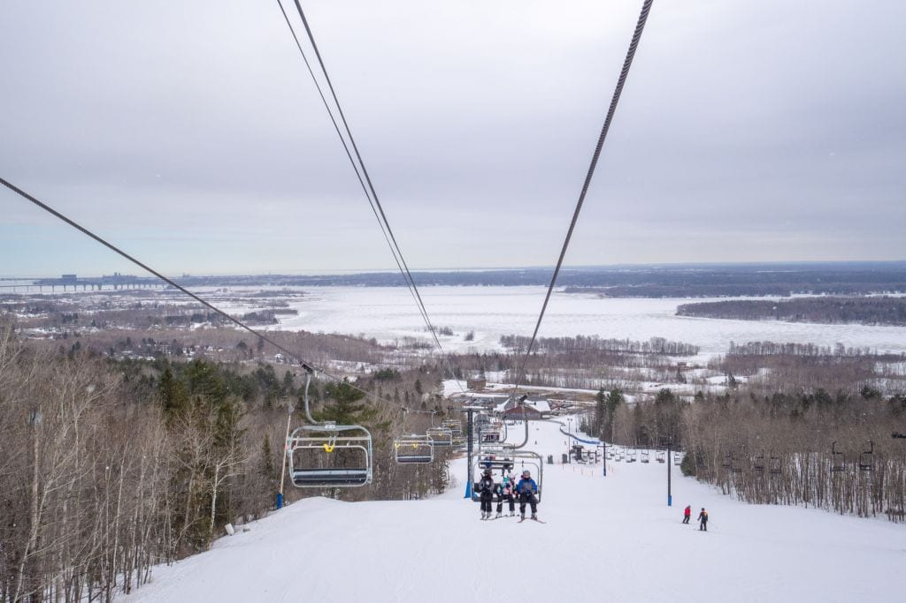

UMD-Duluth!
Why I Chose UMD
I picked UMD because I really liked the campus and the tunnels here so that I wouldn't have to go outside in the winter. Another reason I picked UMD is because of the fantastic business program that they provide us with here, since I am an accounting major. Another I choose UMD because I really liked the location of the campus, I loved all of the outdoor activities that Duluth had to offer like, Skiing, hiking, fishing, and swimming.
Campus Views
